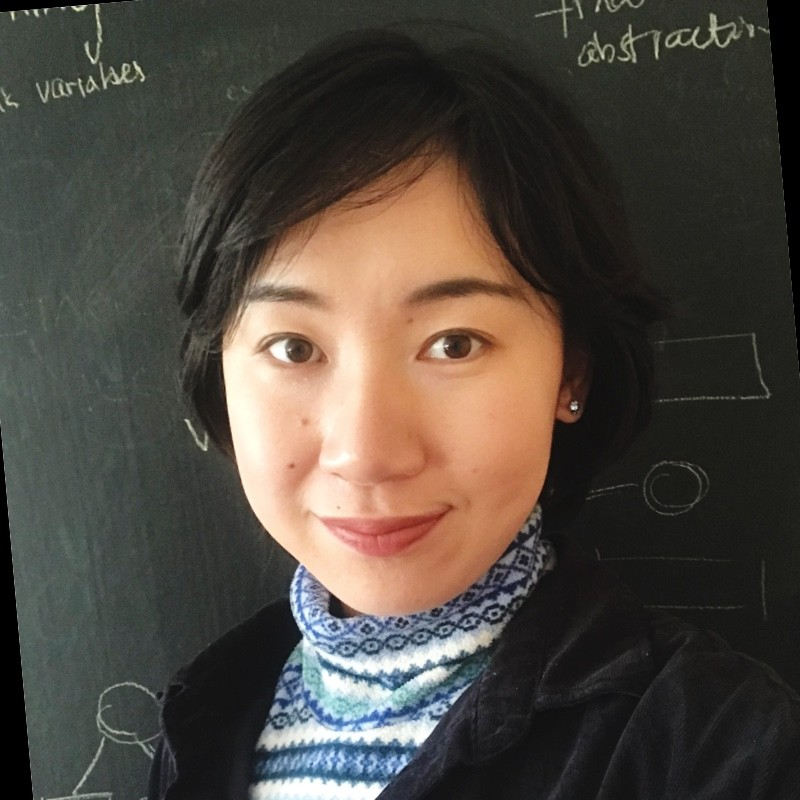

Chunking · Abstraction · Neural Population Dynamics · Interpretable AI
Scientist · Shanahan Fellow
Allen Institute & University of Washington
shuchen dot wu at alleninstitute dot org
I study how structured representations emerge in minds, brains, and machines. My research develops theories of chunking, abstraction, neural population dynamics, and interpretable AI systems. At the University of Washington, I work with Prof. Rajesh P. N. Rao on connecting predictive coding as a neural theory to chunking in cognition. At the Allen Institute, I work with Prof. Stefan Mihalas to test theory-driven predictions on neural population dynamics data, and with Prof. Carl Schoonover to design behavioral experiments studying how animals learn structure in ever-changing environments.
I received my PhD training on Computational Cognitive Neuroscience at the Max Planck Institute for Biological Cybernetics under the supervision of Prof. Eric Schulz, Prof. Peter Dayan, and Prof. Felix Wichmann, where I developed computational principles of chunking in cognition to describe the process of building up structured representations during learning. Following my PhD, I conducted a research visit to Prof. Zeynep Akata's group where I developed cognition-based method to interpret AI systems. Prior to my PhD, I received my master’s degree from the Institute of Neuroinformatics at the University and ETH Zurich, and bachelor’s degrees in Physics, Applied Mathematics, and Computer Science from the University of Rochester.
Every moment, the brain is flooded with streams of sensory experience. Yet from this continuous flow, we perceive a world composed of objects, events, structures, and memories. How do our brains learn stable concepts and abstract knowledge from perceptual sequences?
I study how structures arise from sequences of cognitive experience. In particular, I investigate how neural systems organize the continuous stream of sensory input into pieces — often called chunks. Perceptual chunks, concrete and abstract, constitutes our memory, perception, and behavior - we can typically hold around 3–7 chunks in working memory. Chunks become useful entities for prediction and for the compression of our sensory experience, and reusable building blocks of thought and behavior. By learning how to compose chunks into hierarchical structures, we acquire complex abilities such as language, music, and skilled movements like dance.
Combining computational neuroscience, cognitive science, and AI, I develop computational theories to explain how perceptual chunks emerge in cognition, how they are implemented by neural computation, and how these principles can be used to interpret artificial intelligence systems. My work spans hierarchical learning, predictive coding, neural population dynamics, and interpretable AI, with the long-term goal of understanding how neural systems compress the continuous complexity of the world into structured, reusable pieces of representation.